Feature guide
What each part of Konode is for, when you would use it, and where to find it. New to Konode? Start with the setup guide.
The screenshots show the version in development, so a few screens look newer than the 1.5.1 in the stores: Storage is a grid of tiles rather than a list, and the popup names each data type's state in words. Parts that are not in 1.5.1 at all are marked Next version.
The popup
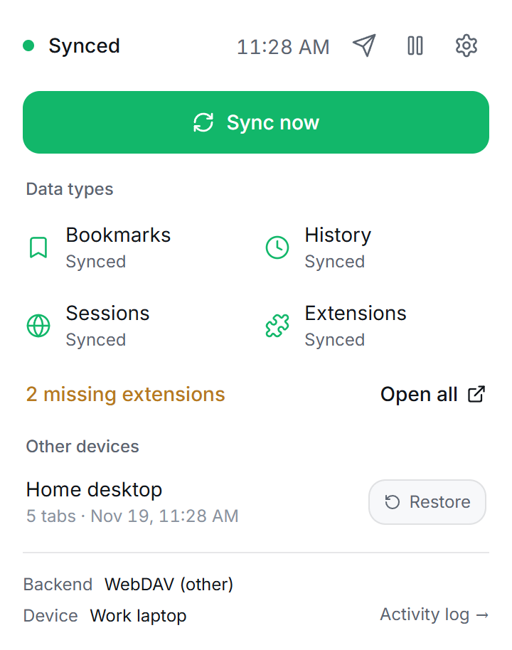
Click the Konode icon in your toolbar to see where things stand.
- Status at the top left: Ready, Syncing, Synced, Error or Conflict, with the time of the last sync.
- Sync now syncs straight away, without waiting for the next scheduled pull.
- Data types lists the types you sync, each with its state: Synced, Not synced yet, Last sync failed, or Off.
- Missing extensions appears when another device has extensions this one does not. Open all opens their store pages in new tabs.
- Other devices lists the open tabs of each device that syncs them, with Restore.
- The icons at the top right open the Send to device menu, pause automatic sync, and open Settings. The first two come with the next version.
The popup also carries notices that need you: a conflict waiting for your choice, or a deletion that was held back.
What you can sync
Pick the data types under Settings → Data Types, or in the setup wizard. Bookmarks are on by default. The other three are off until you turn them on, and turning one on is when the browser asks for the permission it needs, so a type you never turn on is a permission Konode never holds.
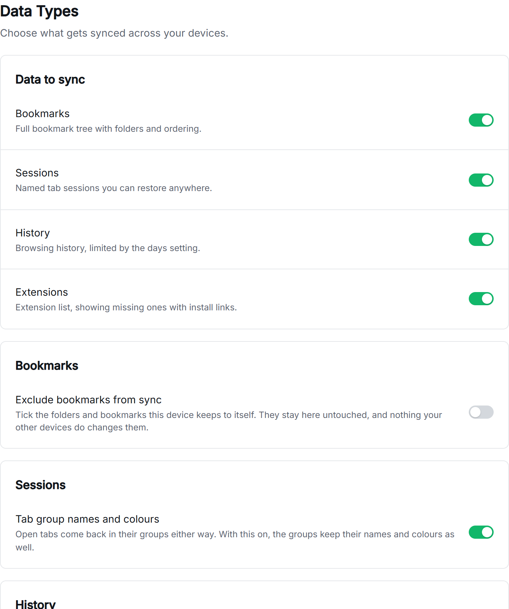
Bookmarks
Your whole bookmark tree on every device, folders and order included. Use it when you want the same bookmarks in every browser you use, including a mix of Chromium browsers and Firefox.
- New bookmarks, renames, moves and folder reorders travel to your other devices.
- Deletions travel too, so a bookmark you deleted does not come back from a device that still had it.
- The first sync on a new device merges: bookmarks it already had are kept and combined with the rest.
- A folder can stay on one device only. See Keeping bookmarks out of sync.
Open tabs (Sessions)
Each device shares the tabs it has open. Use it to pick up on one computer where you left off on another.
- In the popup, Other devices lists every device's tabs. Restore asks first, then opens them. It opens only the tabs you do not already have open, so restoring twice does not double them up.
- Tab groups come back as groups. With Tab group names and colours on, they keep their names and colours too. Firefox has tab groups from version 138, and their names and colours from 139.
- Pinned tabs stay pinned. Whether a group was collapsed is not synced.
History
The pages you visited, combined from your devices into one list without duplicates. Use it when you want to find a page you opened on another computer.
- Days to sync sets how far back it goes: 7 to 365 days, 30 by default.
- Firefox keeps each page's original visit date. Chromium browsers give an extension no way to set it, so there a page from another device is dated when it arrived. Visit counts are not carried on either.
Extension list
The names of the extensions you have installed, so you can see which ones a device is missing. Use it when you set up a new computer.
- The popup shows how many are missing here. Settings → Data Types lists them one by one with an Install or Find link.
- Konode never installs or removes an extension. The permission it asks for only reads the list.
- Between a Chromium browser and Firefox, extensions are matched by name and developer website, since the two stores use different IDs.
Where your data goes
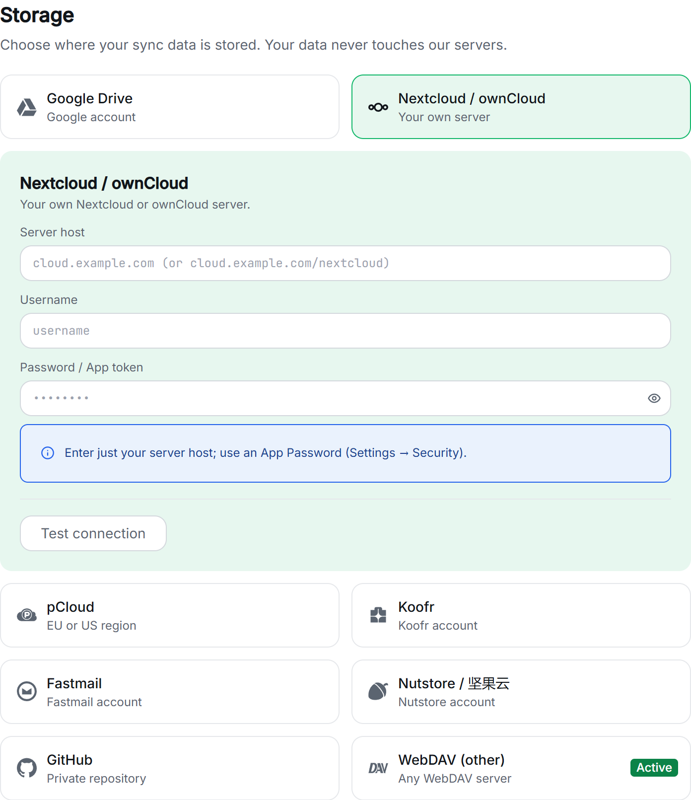
Konode writes to storage you already have, and to nothing else. Pick it under Settings → Storage. All your devices use the same one.
- Google Drive: one sign-in with your Google account. The least setup. Konode sees only the files it created (the
drive.filescope). - GitHub: a private repository and a fine-grained token with Contents: Read and write. Every sync is a commit, so you get a full history of changes. Public repositories are refused.
- Nextcloud / ownCloud: your server's host, your username and an app password. Konode builds the WebDAV address from the host.
- pCloud: your account region, EU or US. Needs a paid pCloud plan.
- Koofr: your Koofr email and a Koofr app password.
- Fastmail: your Fastmail address and an app password with Files (WebDAV) access.
- Nutstore / 坚果云: your Nutstore email and a third-party app password. Works from mainland China, where Google Drive cannot be reached.
- WebDAV (other): the full
https://address of a Synology, kDrive or any other WebDAV server, a username and a password.
Test connection checks the details before you save. Konode connects
to a WebDAV server only over https://, or over http:// to a
server on the same computer, because WebDAV sends your password with every request.
It keeps one file per device and data type in a Konode folder
(konode on GitHub and WebDAV), which you can look at, or delete, with
your provider's own tools.
End-to-end encryption
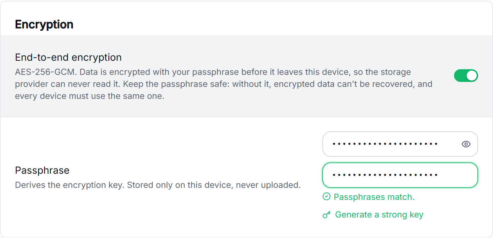
With encryption on, Konode encrypts your data on your device before it uploads it, so your storage provider stores files it cannot read. Use it whenever anyone other than you could see your storage.
- Turn it on in the setup wizard, or under Settings → Storage → Encryption. It is off until you choose it.
- Type a passphrase of at least 12 characters, or press Generate a strong key. Every device needs the same one.
- AES-256-GCM, with the key derived from your passphrase by PBKDF2-SHA256 over 600,000 rounds. The passphrase stays on the device and is never uploaded.
- If a device's passphrase does not match the others, Konode tells you on that device instead of failing quietly.
- There is no recovery. Konode runs no server, so nobody can reset a lost passphrase. Keep it in a password manager.
Keeping bookmarks out of sync
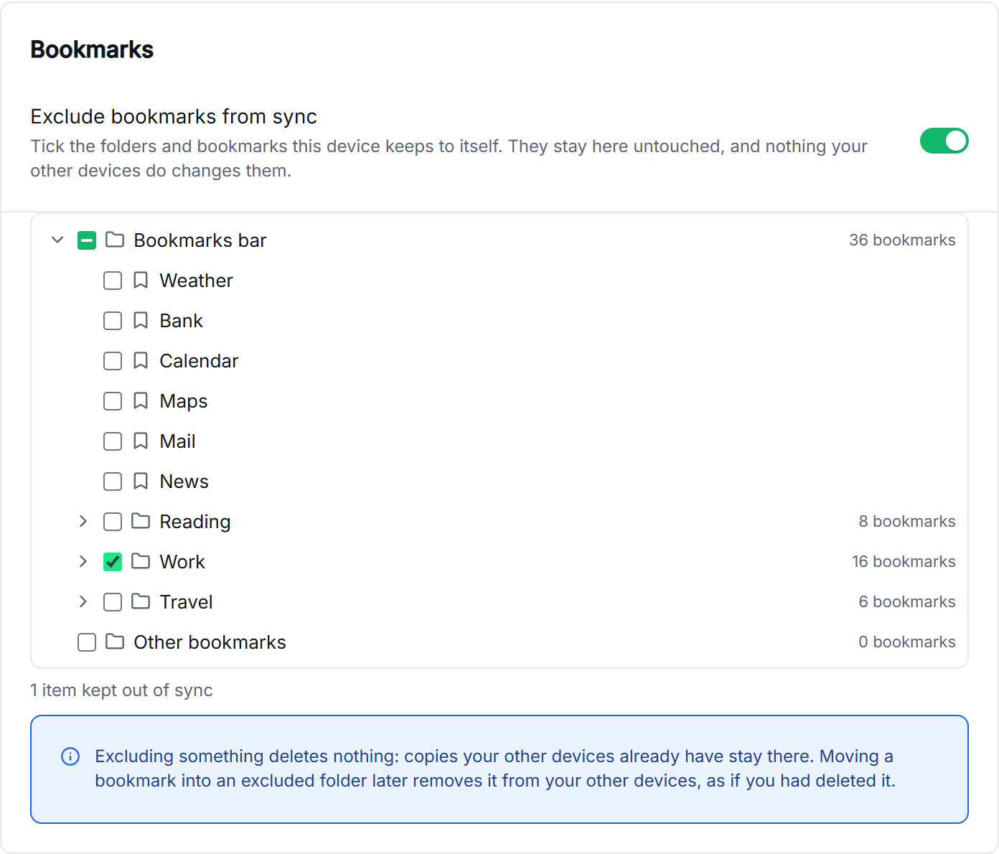
Tick any folder or bookmark to keep it on this device only. Use it for a folder another extension fills, for work bookmarks you do not want at home, or for a very large folder you never need elsewhere.
- Find it under Settings → Data Types → Bookmarks → Exclude bookmarks from sync, or under Bookmarks in the setup wizard.
- What you tick is never uploaded, and nothing your other devices do changes it. A ticked folder stays excluded when you rename it.
- Excluding deletes nothing: copies your other devices already have stay there.
- Moving a bookmark into an excluded folder removes it from your other devices, as deleting it would. Moving it back out brings it back to them.
When two devices disagree
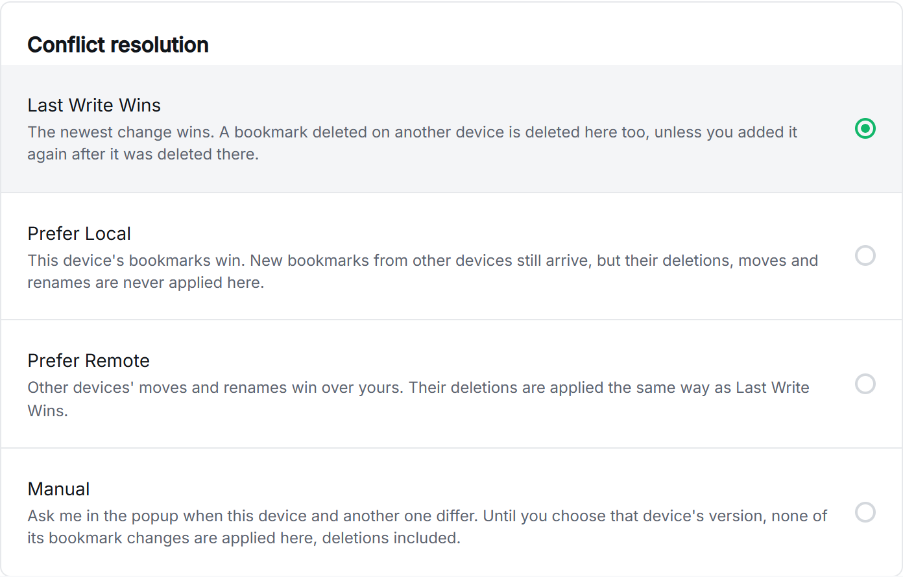
Choose under Settings → Device → Conflict resolution what happens when another device changed the same bookmarks:
- Last Write Wins, the default: the newest change wins. A bookmark deleted on another device is deleted here too, unless you added it again after that.
- Prefer Local: this device's bookmarks win. New bookmarks from other devices still arrive, but their deletions, moves and renames are never applied here.
- Prefer Remote: other devices' moves and renames win over yours. Deletions work as in Last Write Wins.
- Manual: Konode asks you before it applies anything from a device whose bookmarks differ from yours. Until you choose, none of that device's bookmark changes reach this one, deletions included.
Manual: choosing a version
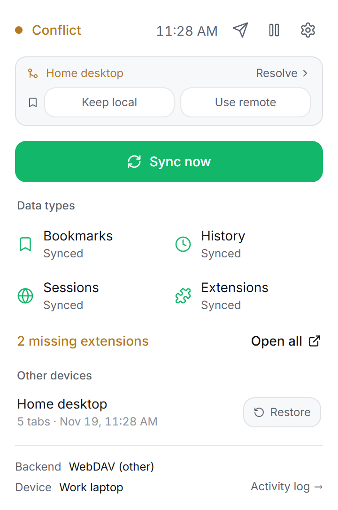
With Manual on, the popup shows a card for each device that differs. Keep local leaves this device as it is. Use remote merges the other device's changes into this one.
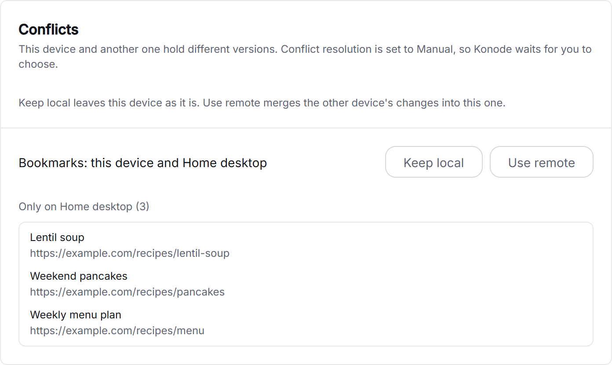
Next version The card's Resolve link opens Settings → Activity → Conflicts, which lists what differs before you choose: the bookmarks or pages only the other device has, the ones only this device has, and how many sit in a different folder or under a different title. Looking changes nothing on either device. In 1.5.1 the card names the device but not what differs.
Restore points and the mass-deletion guard
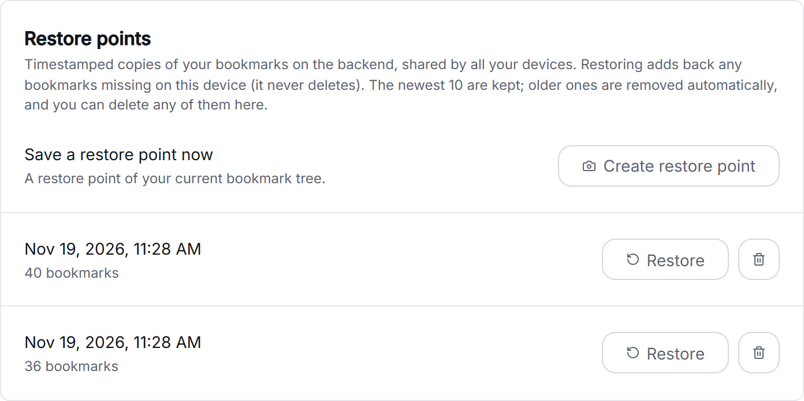
A restore point is a copy of your bookmark tree, kept in your storage where every device can see it. Use one to undo a cleanup that went too far, on any of your devices.
- Find them under Settings → Activity → Restore points. Create restore point saves one now.
- Restore adds back the bookmarks missing on this device and puts them back where they were. It never deletes anything.
- The newest 10 are kept. You can delete any of them.
The mass-deletion guard. If another device asks to delete more than 60% of your bookmarks within a day, Konode holds the deletion back, saves a restore point first, and tells you in the popup. This protects you from a broken or confused device clearing every browser at once, while ordinary cleanups still go through. Change the threshold under Settings → Device → Safety → Max bulk delete from a peer, from 50 to 95%.
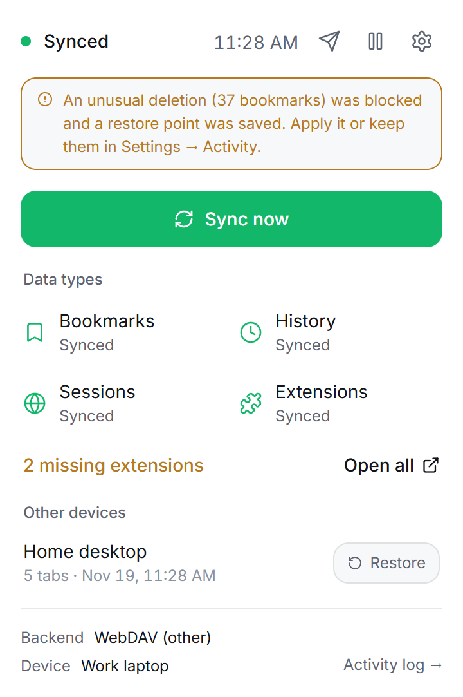
Then decide in Settings → Activity → Blocked deletion:
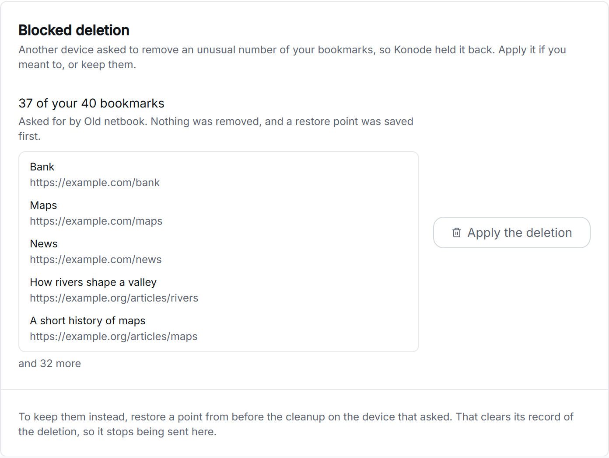
- Apply the deletion if you meant it.
- To keep the bookmarks, restore a point from before the cleanup on the device that asked. That clears its record of the deletion, so it stops being sent.
Next version The card lists the first bookmarks the deletion would remove, by title and address, so you can tell a cleanup you meant from one you never made. In 1.5.1 it gives the count and the device.
Your devices
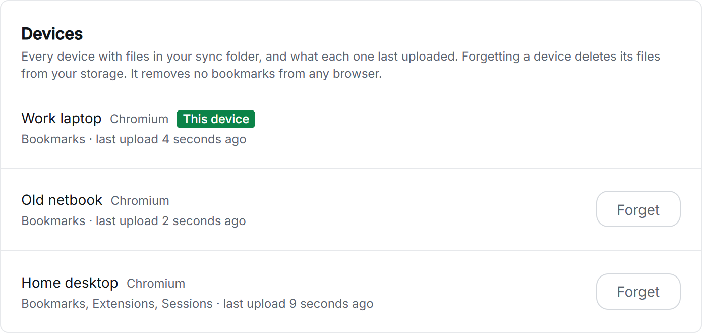
Settings → Activity → Devices lists every device with files in your storage and what each one syncs. Use it to check that a new device has joined, or to clear out one you no longer use.
- Forget deletes that device's files from your storage. It removes no bookmarks from any browser. A browser that is still running uploads itself again within a minute, so forget a device after you have uninstalled Konode there.
- Give each device a name you will recognize under Settings → Device → Device name.
Next version Each row says how long ago the device last uploaded and which browser it is, for example "Brave (Chromium)" or "Firefox (Gecko)". A device that has uploaded nothing for over 30 days is marked Inactive. Nothing happens to it on its own.
When Konode syncs
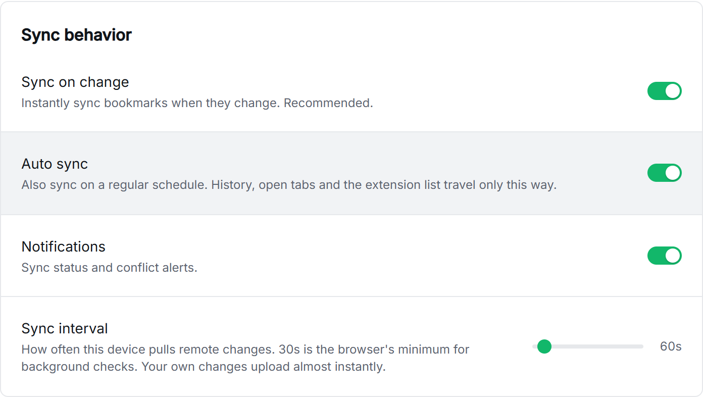
Three things start a sync, under Settings → Device → Sync behavior:
- Sync on change: a bookmark you add, edit or delete goes out about a second later. Bookmarks only.
- Auto sync: the scheduled pull, every Sync interval, 60 seconds by default, 30 to 600. This is how a device hears about other devices' changes, and how history, open tabs and the extension list travel.
- Sync now in the popup.
Your storage has no way to tell a device that something changed, so each device checks on a schedule. 30 seconds is the fastest a browser runs an extension's background timer.
Pausing sync Next version
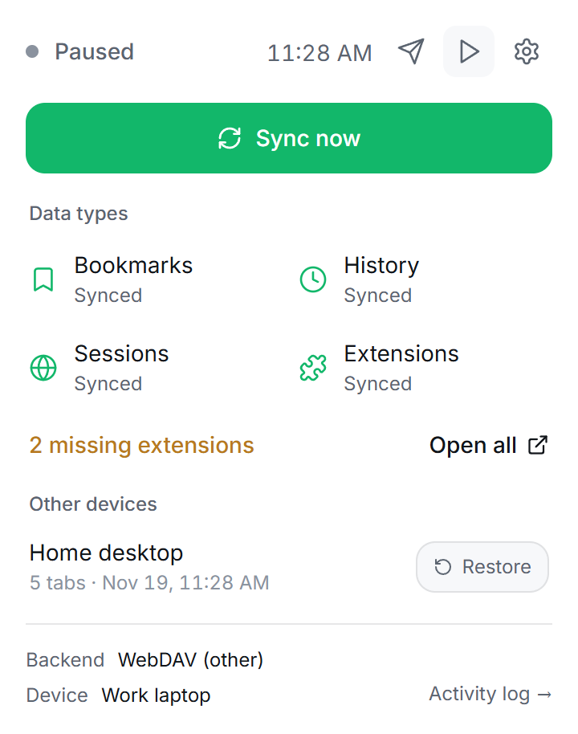
The pause icon at the top of the popup stops both automatic syncs, Sync on change and Auto sync, until you resume. Use it while you reorganize a lot of bookmarks and want to finish before your other devices see the result, or on a slow or metered connection.
- The status reads Paused, and the icon turns into a play button that resumes.
- Sync now still works while paused.
- Your edits are kept and go out with the next sync. Resuming syncs straight away.
- Settings → Device → Sync behavior says sync is paused, greys out the two switches and has a Resume button too. Your own Sync on change and Auto sync settings are left as they were.
Send to device Next version
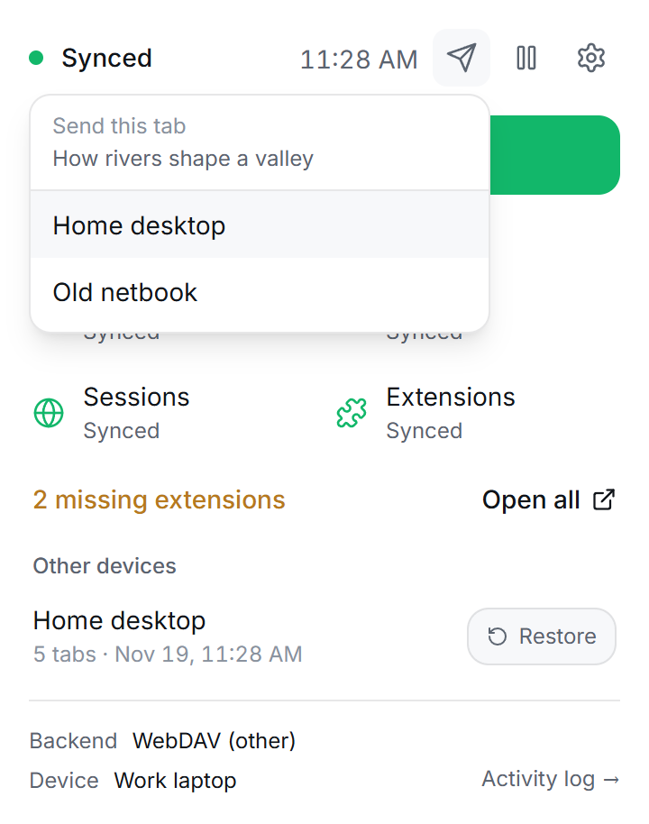
Send the page you are on to another of your devices. Use it to carry an article from your phone to your computer, or a page from work to home, without bookmarking it.
- Right-click a page or a link and choose Send to device, then the device. In Firefox the entry is on a tab's own menu as well.
- Or press the paper-plane icon in the popup, which lists your devices for the page you are on. On Firefox for Android this is the way to send.
- Konode has no server, so the tab travels through your storage and opens on the other device at its next sync, quietly, in a background tab. With Auto sync on that is within a minute or so. A device that is off opens it when it starts.
- A device is offered once it runs this version. With encryption on, a sent tab is encrypted like everything else, and a device that cannot read your encrypted data is not offered.
- A tab that is never picked up is dropped after 14 days.
- This adds two permissions that ask nothing at install: the right-click menu, and access to the tab you are on at the moment you click Konode or that menu entry.
Activity log, backup and the rest
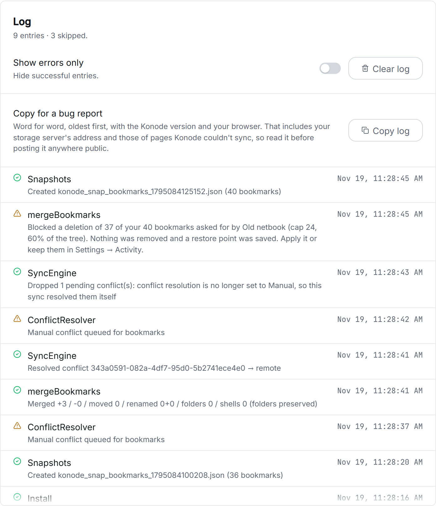
Settings → Activity shows what Konode did on this device: how much it transferred, how many syncs it ran, and the last 200 log entries. All of it stays on the device.
- Show errors only hides the entries that went fine.
- Copy log puts the whole log on the clipboard, oldest first, with the Konode version and your browser at the top, ready to paste into a bug report. It is word for word, so it includes your storage server's address. Read it before you post it anywhere public.
- Export backup (Settings → Advanced) downloads your bookmarks, history and extension list as a JSON file, with no storage needed. Import backup adds the bookmarks from such a file into a new folder,
Konode Import. - Notifications (Settings → Device) shows sync status and conflict alerts from the browser.
- Debug mode (Settings → Advanced) writes more detail to the log. Turn it on when you are chasing a problem, and off when you are done.
Konode cannot sync passwords: browsers do not let extensions read their password store. Use a password manager for those.
Something not behaving? The troubleshooting page covers the failures that come up most. The screenshots here use made-up bookmarks and devices.